The problem
Most people who start working out at home stop within a few weeks. Two things come up again and again: they don’t know which workout to do, and nobody tells them whether they’re doing it right. Bad form means slow progress at best and a sore back at worst.
The tools that exist ask you to choose. Video apps show you a trainer but can’t see you. Camera apps can see you, but only if you stand facing your phone in good light, which rules out half the moves and most living rooms. Smartwatches count steps and heart rate, but a watch on one wrist can’t tell if your knees are caving in.
How might we give someone a coach who watches every rep, without asking them to look at a screen or put a camera on themselves?
The idea
Instead of watching the body from outside, STHIRAI feels it from the inside. A pod on each wrist and each heel reports the angle of that limb. The phone lies on the floor, ranges the four pods and works out the whole pose: squat depth, knee tracking, balance from left to right. The coach turns that into short spoken cues between reps.
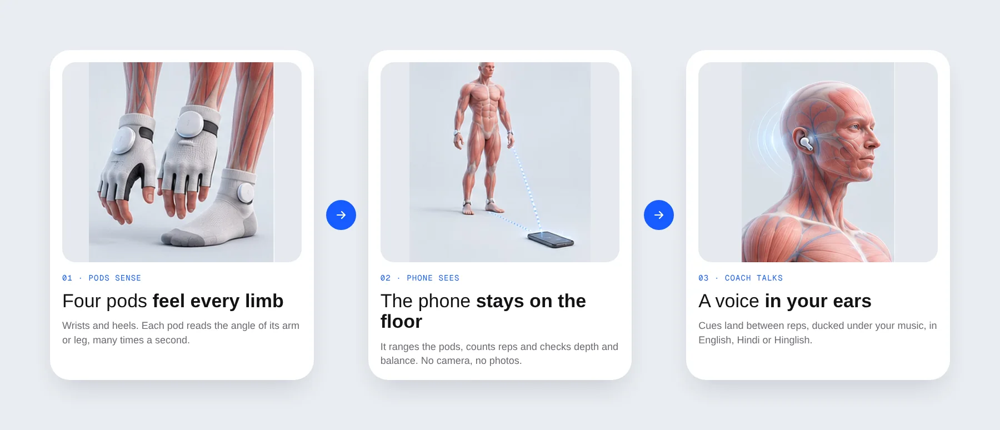
The hardware shaped the UX as much as the app did. The pods click into mounts magnetically, so each one learns which limb it’s on from the mount and nobody has to label them. They live in a four-lobe charging case you twist to release, and they only pop out halfway so they never fly across the room.
Principles
Before any screens, I wrote down the rules every screen had to follow. They settled most arguments later.
Eyes off the screen
During a workout the phone is on the floor. Anything you need mid-set has to work as a voice cue. The screen is for before and after.
One thing at a time
One question per onboarding screen, one pod per setup step, one cue per rep. Beginners drop off when they have to juggle.
Illustrated, never photographed
Body type, injuries and body mapping all use 3D anatomy renders. The product never asks for a photo of you.
Errors are coaching
When something breaks, the app says what happened, what to do and how to carry on, in the same calm voice as the coach.
The journey
A hardware product has a long first day. You download the app, sometimes before the box arrives, answer a few questions, unbox and pair the kit, map your body, meet your coach and only then do your first rep. I mapped it as eight stages and designed every screen in each one, including the stage most products leave for later: when things go wrong.
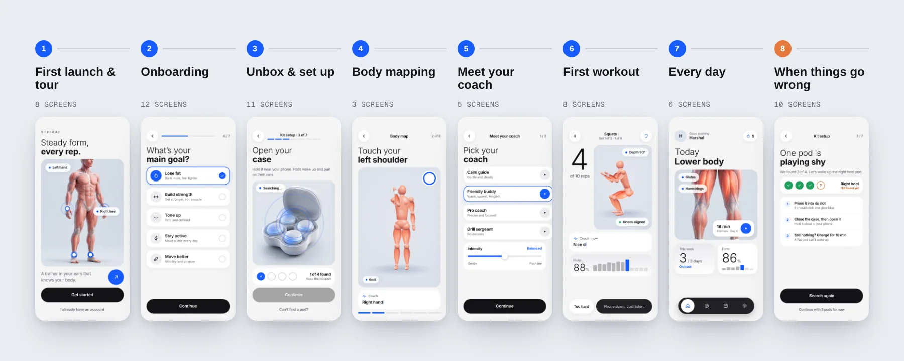
First launch & tour
The first few screens have one job: explain a product people have never seen before. The tour is three cards, one per idea (pods, coach, progress), each anchored by a render instead of a paragraph. “How it works” then breaks the system into three tabs you can tap through.
The kit check matters more than it looks. Some people install the app the day they order. Rather than blocking them, the app lets them build a plan now and set up the pods when they arrive, or try a short voice-only taster session.
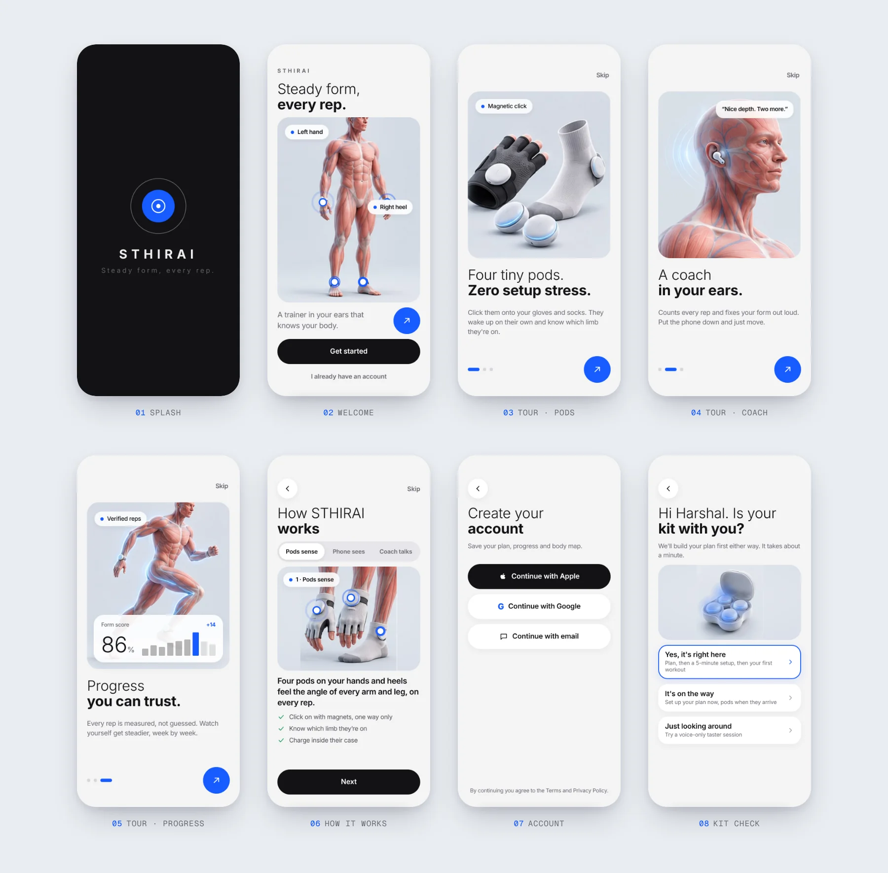
Onboarding
Onboarding offers two paths. “Just get me started” takes a minute and lets the plan learn from the first few sessions. “Build my plan” takes three minutes and asks about goals, focus areas, space and equipment. Both end in the same place, and you can switch to the full plan later from Settings.
Two screens do the heavy lifting. The goal screen is an interactive slider: drag it and the silhouette changes shape, with a rough timeline that updates as you go. The injuries screen is a body you tap. Mark a lower back or a knee and the coach swaps the moves that strain it.
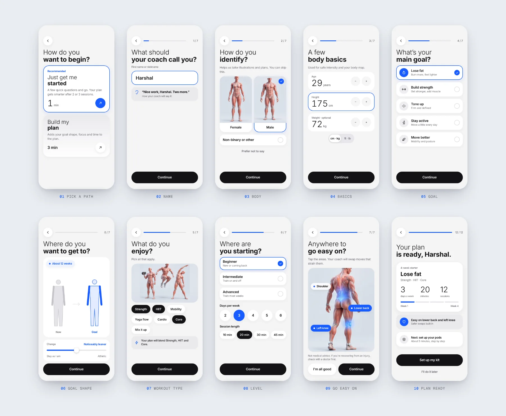
Unbox & set up
Setup is seven steps, counted at the top of every screen, so it never feels endless. Each step mirrors something physical: plug in the case, open it, watch the pods appear one by one, put on the gloves and socks, find a clear spot, put the phone down. The case light legend lives on the charging screen because that’s where people first wonder what amber means.
Permissions are asked in context. Bluetooth comes up only when it’s needed to find the pods. The microphone waits until you set up voice commands, and notifications until after your first workout.
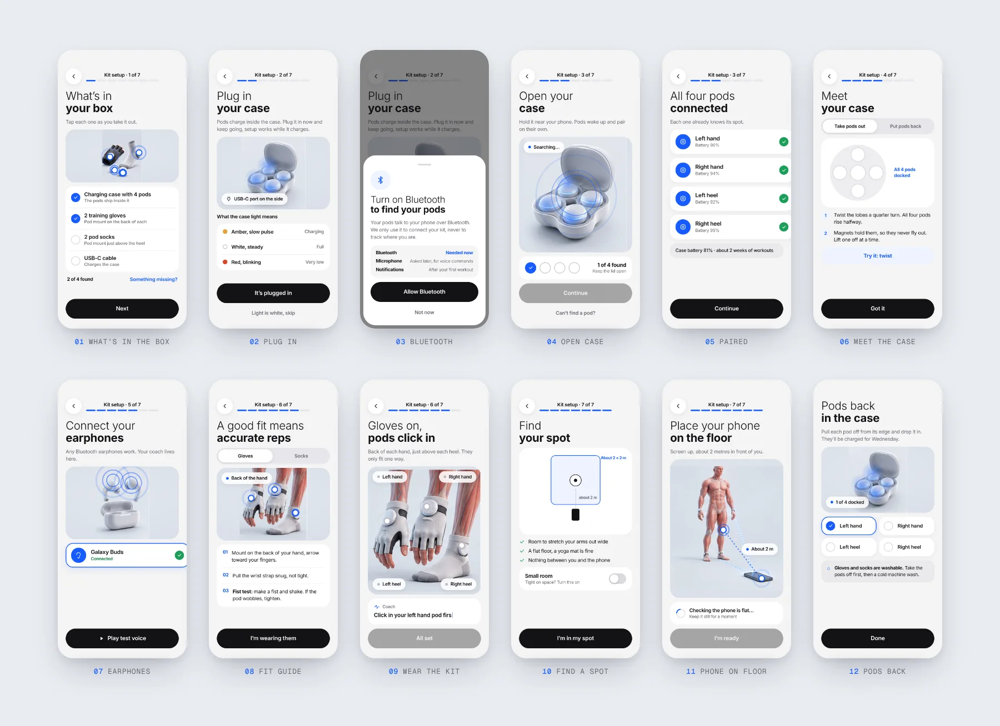
Body mapping
To count reps properly, the coach needs to know your proportions. Instead of a tape measure or a photo, you hold six simple poses for about a minute: stand tall, touch each shoulder, T-pose, arms overhead, an easy squat, and a one-leg balance. The pods measure the distances between them, and the result is a body profile with arm span, squat depth, reach and left/right balance.
The coach talks you through each pose, a ring fills while you hold still, and if a pose doesn’t read cleanly you get one specific correction (“arms a little low”) and another go.
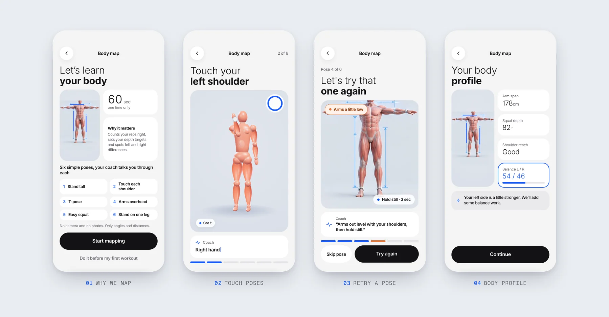
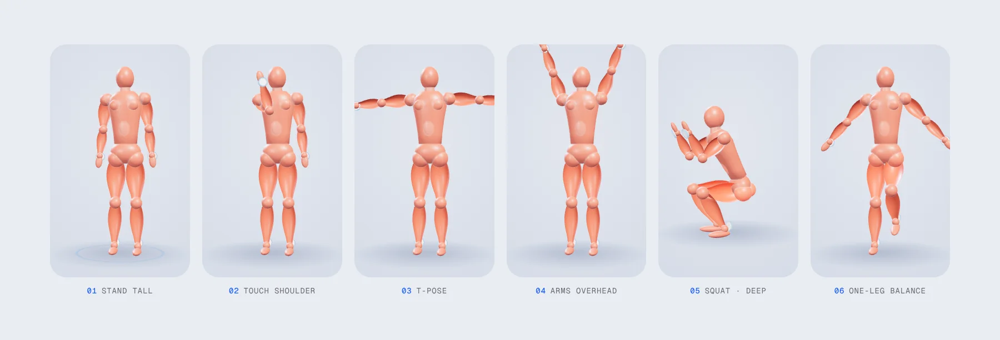
Meet your coach
The coach is the product, so you choose who it is: a calm guide, a friendly buddy, a focused pro or a drill sergeant, plus how hard it pushes. It speaks English, Hindi or Hinglish, ducks your music when it talks, and listens for a handful of commands like “Coach, pause” or “make it easier”.
Before the first real workout, you do three practice squats with the coach. It’s a low-stakes way to learn what a cue sounds like and to trust that the phone on the floor really is counting.
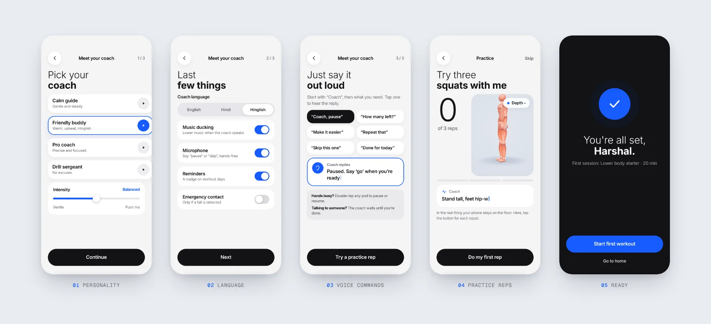
First workout
The workout screen is designed to be glanced at from two metres away: a huge rep count, the figure doing the move, the live depth chip and one line from the coach. Everything else waits. “Too hard” is always one tap away and swaps in an easier version of the same muscles, like chair squats for squats, without breaking the set.
The session ends with an overview of verified reps and form score against your baseline, then a “first win” moment that sets up the next session and a short home tour. The streak forgives: one missed day a week doesn’t break it.
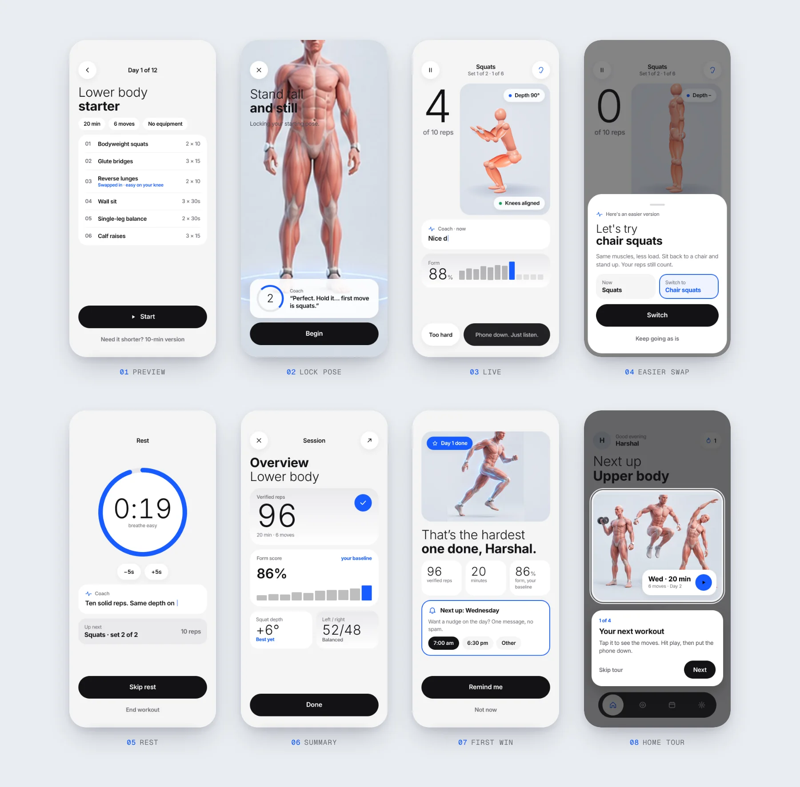
When things go wrong
Hardware fails in physical ways: a pod isn’t clicked in, a battery runs low mid-week, earphones disconnect mid-set, someone kicks the phone. I listed every failure I could think of and designed each one with the same three parts: what happened, the one thing to do, and a way to carry on without losing progress.
The tone does a lot of the work. A missing pod is “playing shy”. If earphones drop, the coach waits and picks up where you left off. If a pod falls off mid-set, the other three keep counting. The one screen with no jokes is the sudden-stop check, which counts down before calling your emergency contact.
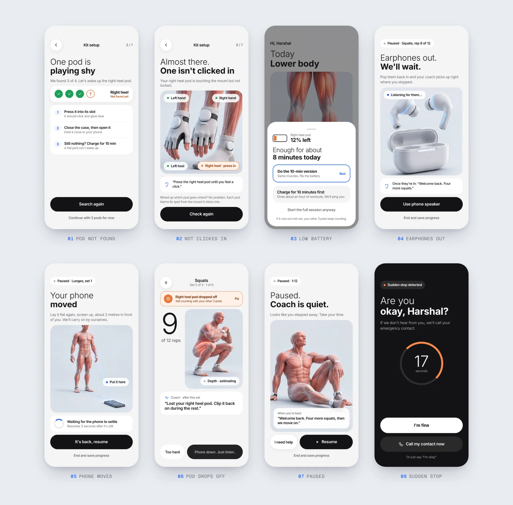
Every day
After the first day, the app gets quieter. Home shows today’s workout and the week’s numbers. Pods shows battery and helps you find a lost one. Progress only counts verified reps, so the numbers are honest. Settings is where you change your coach, redo your body map, or switch to the full plan.
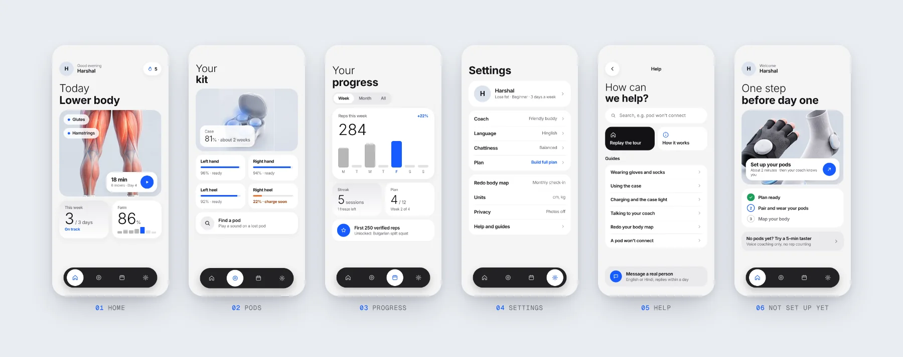
Prototype & motion
Static renders couldn’t show the core promise: a coach that moves with you. So the prototype has a 3D figure built in code. It walks through the mapping poses, squats once for every counted rep, and its leg and core muscles glow brighter as the effort goes up. The pods pulse on its wrists and heels.
- Body mapping. The figure takes each pose while the ring fills and the coach talks you through it.
- Lock pose. Stand still, the count drops from 3, and the set begins.
- Live set. One squat per rep, depth chip and form score updating, a new cue typed in after each rep.
- Summary. Numbers count up into the session overview.
Around it are the small interactions that make it feel like a real app: push and pop transitions between screens, bottom sheets that slide up, buttons that pop when they become ready, typing coach bubbles and numbers that count up. With reduced motion turned on, all of it settles instantly.
Visual language
Fitness apps tend to shout. I went the other way: a light grey canvas, white cards, Urbanist set light for the feeling and bold for the fact, and a single blue for anything you can act on. Green and orange only appear when something is done or needs fixing. The 3D anatomy renders and glass chips carry the energy, so the interface doesn’t have to.
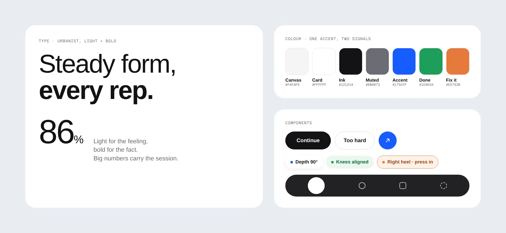
What’s next
This is a concept, and the next step is putting it in front of people. I want to test three things first: whether beginners get through kit setup without help, whether a voice-only coach feels like enough guidance, and whether body mapping feels quick or like a chore.
On the design side, next up are short motion clips to replace the still renders, the retention screens that come after week one, and a first hardware prototype with coin-cell pods to see how the click-in mounts feel on real gloves and socks.